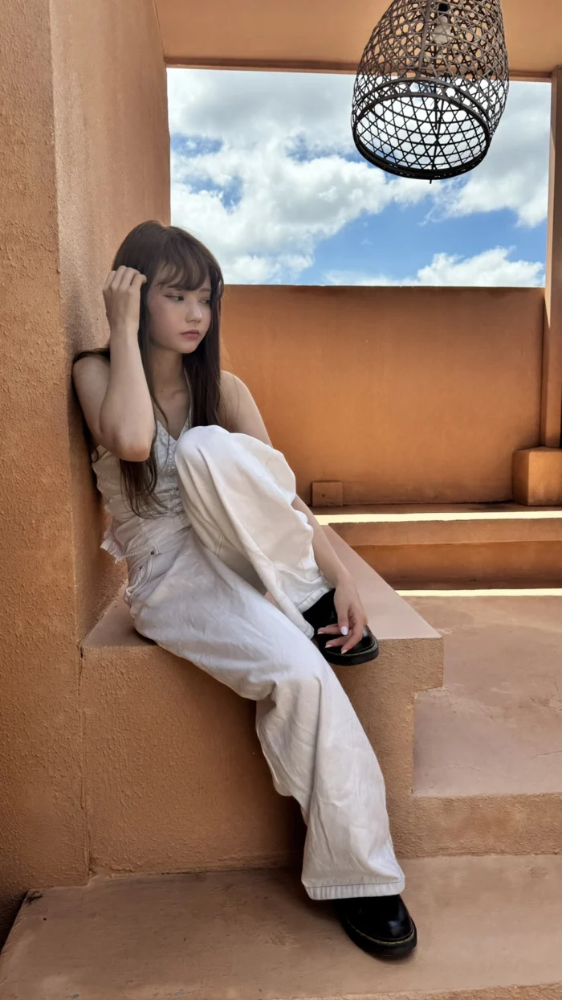
光をまとった、クリームベージュ。
特有の赤みや硬さを視覚的に和らげ、洗練された透明感を引き出します。
Full Color2,500–3,500 B
参考メニュー料金。ブリーチは別途 2,000–2,500B。カウンセリングを重視した
大人のためのヘアサロン
LINE、またはお電話でのご予約がスムーズです
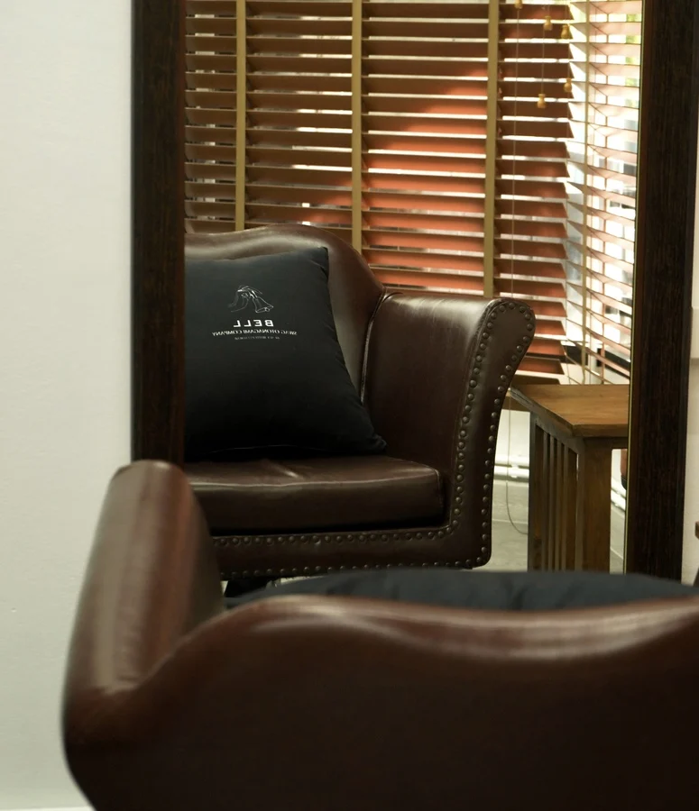
01 — HAIR STORIES
ヘアカットやヘアカラー、パーマのほか、
アイラッシュも用意し、お顔周りをトータルに整えます。

特有の赤みや硬さを視覚的に和らげ、洗練された透明感を引き出します。
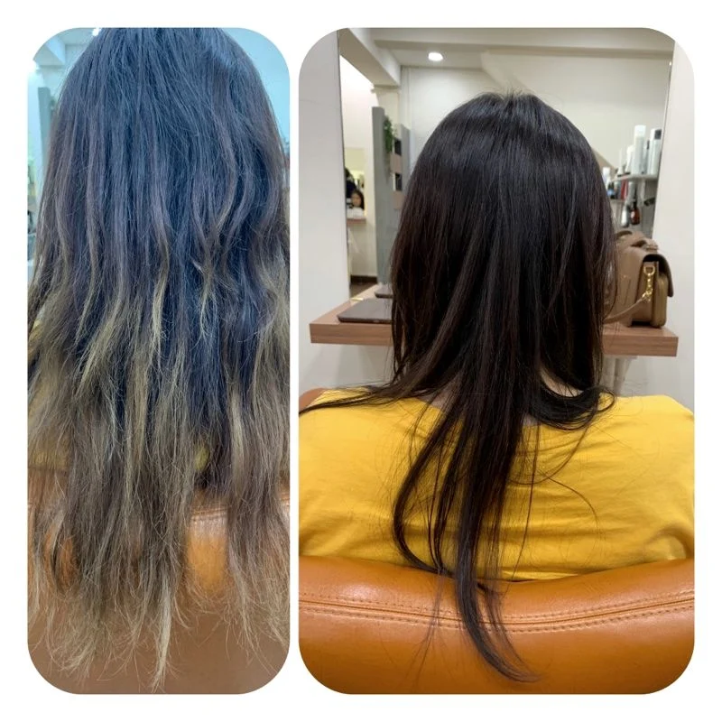
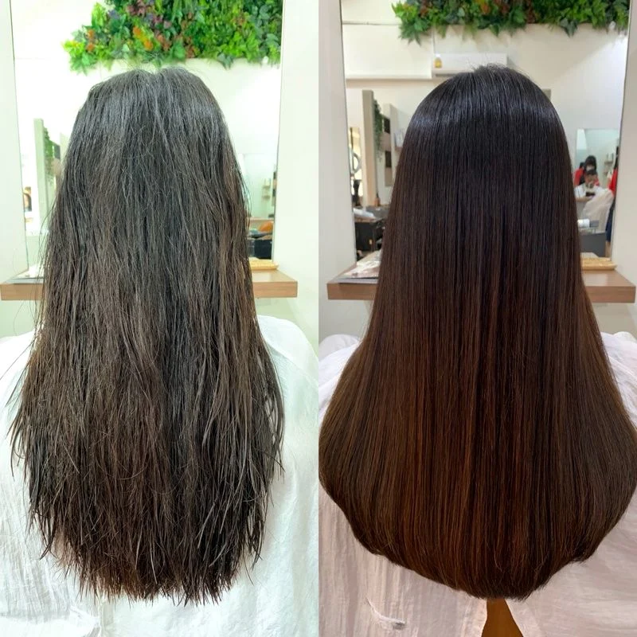
施術前後の写真は 2019 年のブログより。料金は参考メニューの価格で、写真の施術内容・総額を確定するものではありません。
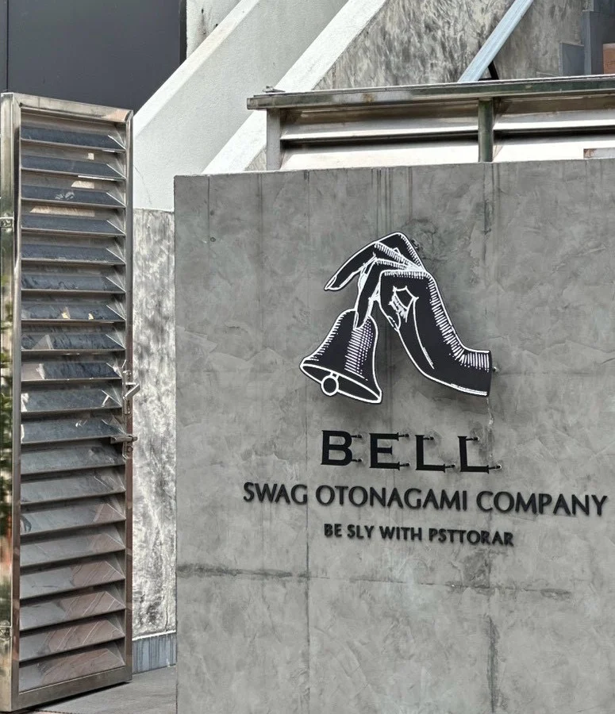
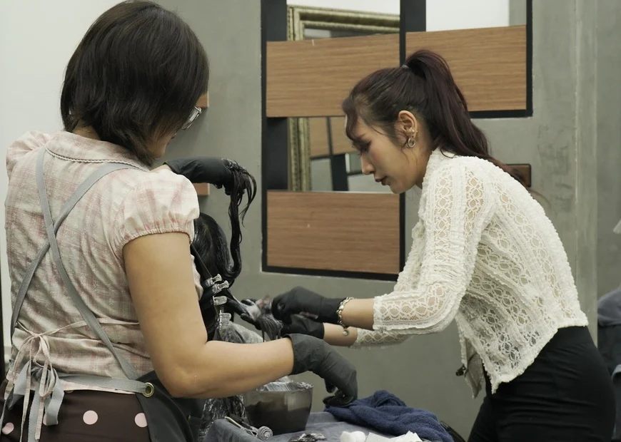
02 — ABOUT BELL
バンコクの喧騒を忘れさせる、
ちょっと贅沢な大人の空間。
「お好きなスタイル」や「好きなスタイルがしっくりこなかった」などの経験・お悩みもお聞かせいただき、『好きなスタイル＝似合うスタイル』になるよう、カウンセリングを通じて少しずつお客さまの理想に近づけていきます。
十分なパーソナルスペースを確保し、ゆったりとくつろげる空間になっています。
04 — OUR PEOPLE
日本・タイでキャリアを積み重ねたスタイリストが、
お客さまが好きで似合うヘアスタイルを提案します。
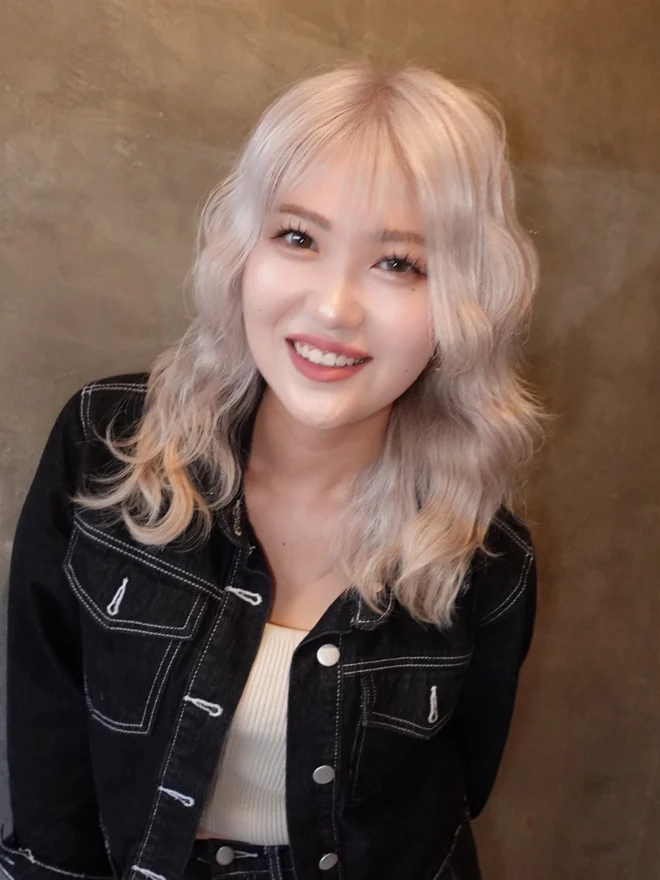
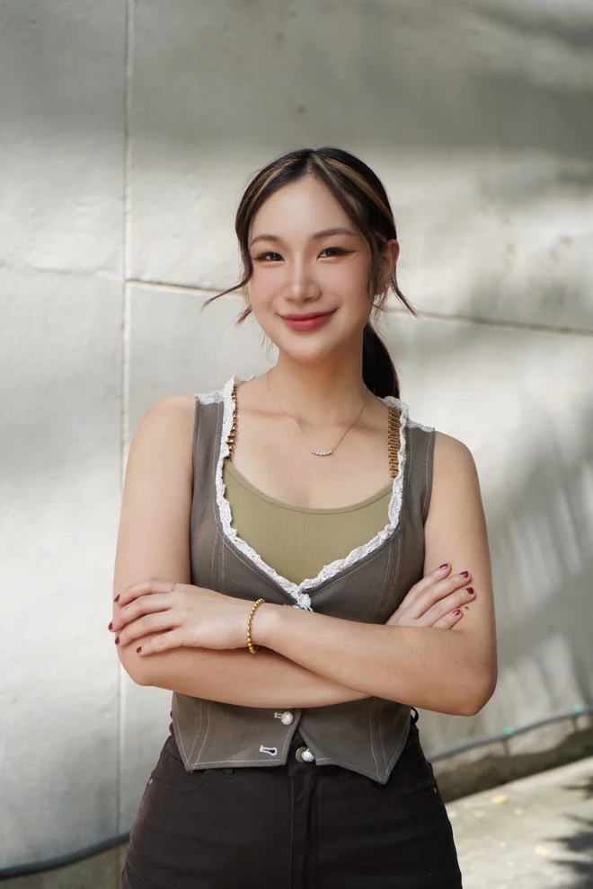
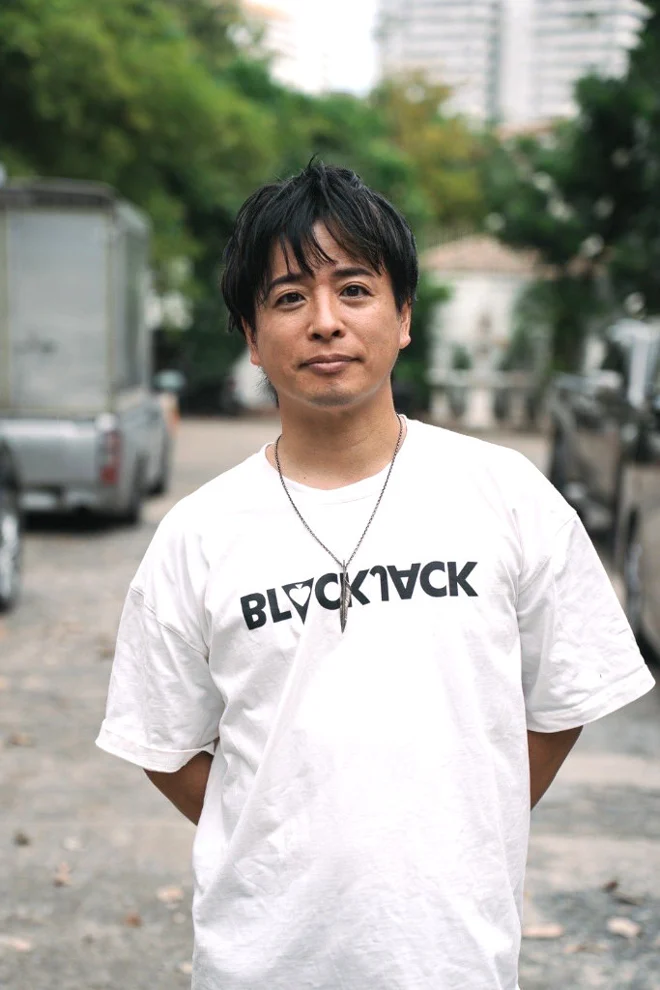
05 — ORIGINAL PRODUCTS
タイ・バンコクの湿度や水の違いに対応できるように
つくられた BELL オリジナルプロダクト。
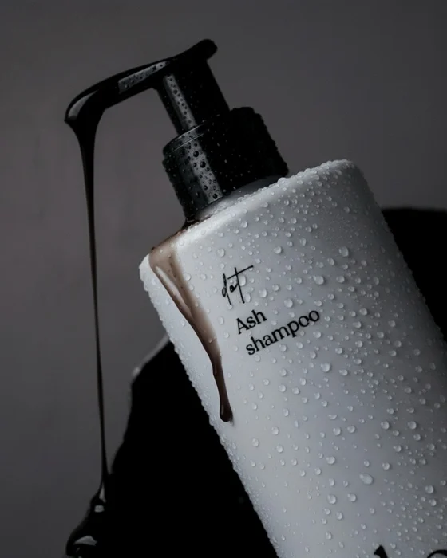
アッシュトーンを長持ちさせるシャンプー。
780 B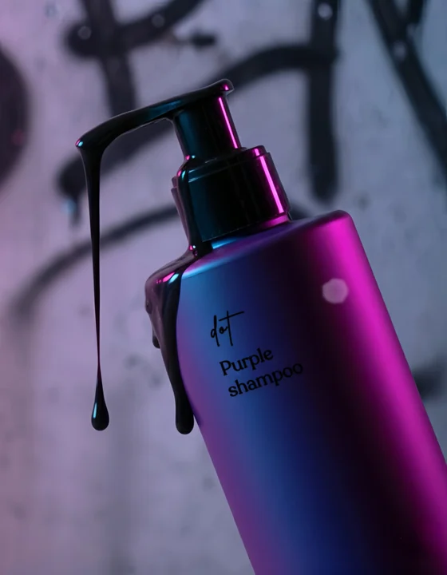
黄ばみやオレンジ味をカバー。
780 B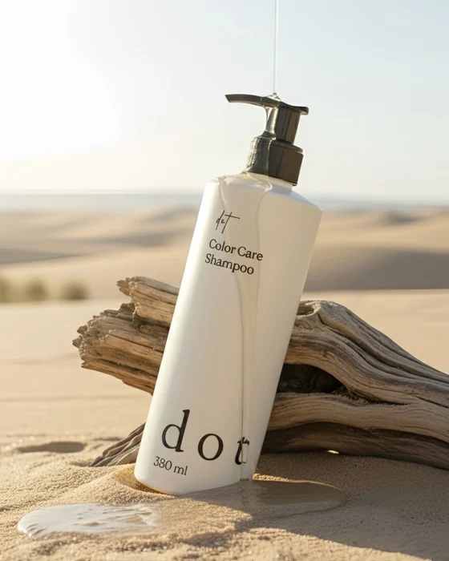
髪とカラーを守るために生まれたシャンプー。
680 B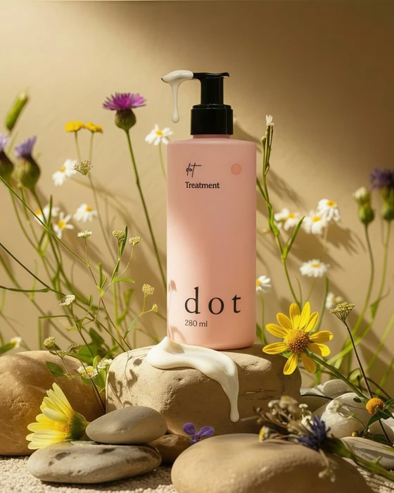
ダメージを補修し、保湿するディープケア。
680 B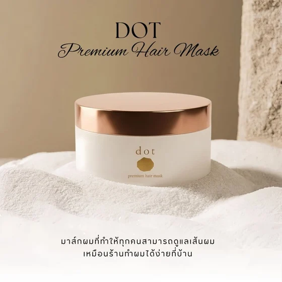
深刻なダメージヘアに、特別なケアを。
1,190 B06 — QUESTIONS
日本ブランドの薬剤を使用しています。なるべくダメージが出ないような薬剤を選び、ダメージ・やりたいカラーに応じてオキシ濃度をコントロール。前処理で油膜を付ける、または逆に油膜を剥がすなど、お客さま1人1人に合う設定を心がけて調合しています。
もちろん大歓迎です。男性のショートやミディアムスタイルはもちろん、朝の時間やゴルフ後でも簡単にスタイルがキマるデザインパーマや、スッキリしたい方へのフェードスタイルなど、ご希望のスタイルを提案いたします。
生活習慣や日頃のケアのアドバイスもいたします。ライフスタイルまたは環境が原因となっているのか、など頭髪診断をし、良い髪の毛が育つ環境づくりをお手伝いします。発毛、育毛などのお悩みも、お気軽にご相談ください。
07 — VISIT BELL
受付時間 9:00–18:30 （タイ時間）
BELL · PHROM PHONG
6/13 Soi Promsri North
Bangkok 10110
A Japanese hair salon in Phrom Phong, Bangkok.
Last appointments: 9:00–18:30; Tuesday: 9:00–14:00.
Closed Wednesdays and the 2nd & 4th Thursdays.
6/13 Soi Promsri North, Khlong Tan Nuea,
Watthana, Bangkok 10110
ร้านทำผมสไตล์ญี่ปุ่น ย่านพร้อมพงษ์ กรุงเทพฯ
รับคิว 9:00–18:30 น. วันอังคาร 9:00–14:00 น.
หยุดวันพุธ และวันพฤหัสบดีที่ 2 และ 4 ของเดือน
6/13 ซอยพร้อมศรีเหนือ แขวงคลองตันเหนือ
เขตวัฒนา กรุงเทพฯ 10110
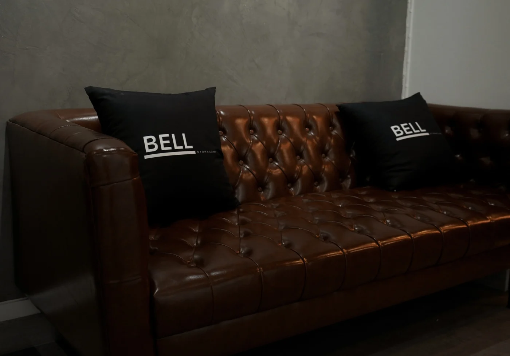
上質を知る大人のヘアサロン